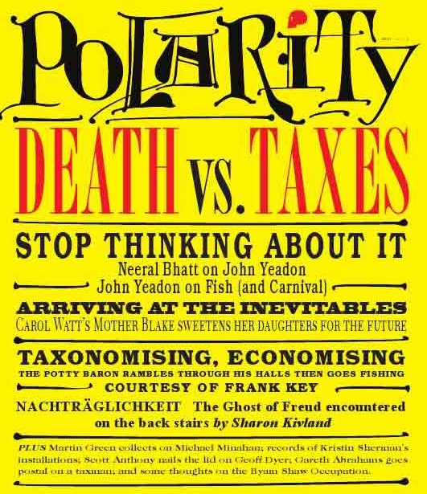

Sunday, June the 20th, 2010
back to: title, date or indexes
While you wait for Mr Key to stop shillyshallying and produce this year's Lulu book, the print aficionados among you will be delighted to hear about a new magazine entitled Polarity. The first issue, Death Vs. Taxes, is due out imminently, and its London launch party is to be held next Sunday, 27th June, from 6.00 PM at the Slaughtered Lamb, 34–35 Great Sutton Street, London EC1. Among other enticements, there will be poetry from Carol Watts, songs from the great Peter Blegvad, and some prose from Mr Key himself, making a rare public appearance. All Hooting Yard readers and listeners should, of course, cancel all other appointments and attend. I am told that the dress code for the event is “bird masks optional”.
